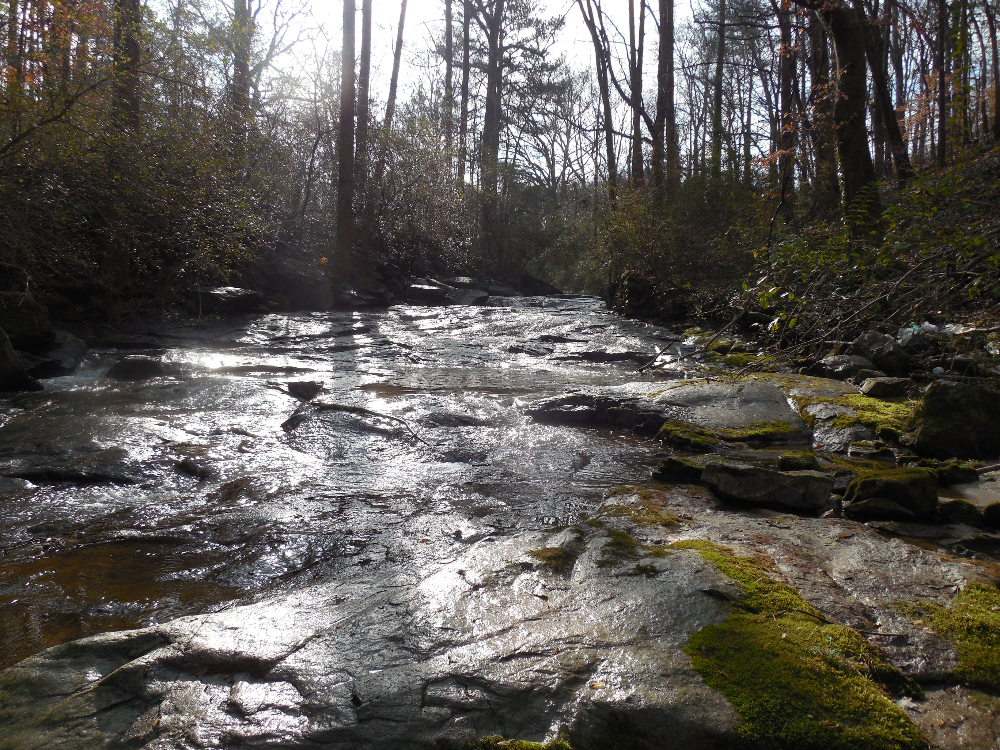

Teaching
Teaching
The following summarizes courses I have developed or taught for universities, professional development courses, conference mini-courses, and self-guided learning. Like my analytical projects, I take a highly collaborative approach to instruction, and most classes are co-developed with complementary expertise. At present, only brief course descriptions are provided, but syllabi and course materials will be uploaded in the future.
University of Georgia
Field Experiences in Natural Infrastructure
Co-developed with Dr. Brian Bledsoe and taught by Bledsoe and McKay in Fall 2023 and Fall 2025.
ENGR 8990 (1 credit hours), College of Engineering, University of Georgia.
The course covers various topics related to the planning, design, and execution of nature-based solutions for water resource management. Students explore these topics through fieldwork components, engaging in hands-on activities, and gaining practical experience. Field sites around Athens are visited to observe and study the interaction of natural systems and infrastructure. These activities aim to deepen understanding of concepts discussed in other UGA courses on natural infrastructure and bridge the gap between theoretical knowledge and real-world application. The course also offers a unique opportunity for students to collaborate with professionals, experts, and local stakeholders involved in diverse ecosystems.

Environmental River Mechanics
Developed by Dr. Brian Bledsoe. Co-taught by Bledsoe and McKay in Fall 2020 and Fall 2021.
CVLE 8110 (3 credit hours), College of Engineering, University of Georgia.
Overview of fundamental concepts related to river hydraulics, sediment transport, fluvial geomorphology, and river response to human influences, with emphasis on restoration design and environmental aspects. Technical communication across the fields of river hydraulics / mechanics, fluvial geomorphology, water quality management, and aquatic ecology is emphasized. Survey of water quality and quantity issues related to the management of rivers, streams, riparian areas, floodplains, watersheds, and aquatic ecosystems. Students are introduced to standard hydraulic and sediment transport models.

River restoration seminar
Developed and taught by Dr. Kyle McKay in Spring 2015.
WASR 8980 (2 credit hours), Warnell School of Forestry and Natural Resources, University of Georgia.
This discussion-oriented class sought to familiarize students with the general context of the $1B / year stream restoration industry such as motivations for restoration, restoration planning processes, alternative disciplinary viewpoints, and key restoration techniques and methods.

Brooklyn College
Urban Water Dynamics
Developed and taught by Dr. Kyle McKay in Fall 2021 and Fall 2023.
EESC 7500G (3 credit hours), Earth and Environmental Science program, Brooklyn College, CUNY.
This class focuses on analysis of built, natural, and social systems for urban water management as well as fundamental concepts in urban hydrology and ecology. Primary learning objectives include:
- Provide an interdisciplinary background on the built, ecological, and social systems involved in urban water management.
- Build skills in systems thinking relative to urban water dynamics.
- Foster numeracy relative to water resource management (i.e., estimation, model development).
- Develop basic knowledge of structured decision making and applied problem solving.

Nature-Based Solutions Seminar
Co-developed and taught by Dr. Kyle McKay and Dr. Brett Branco in Fall 2024.
EESC 7903G (3 credit hours), Earth and Environmental Science program, Brooklyn College, CUNY.
This seminar-based course will explore the growing use of nature-based solutions in cities, which are often proposed in the context of simultaneously managing multiple crises related to biodiversity loss, climate change, aging infrastructure, and inequity of natural hazards. Students will explore these topics through reading peer-reviewed literature, agency and project reports, and other resources on the subject. The instructors will guide the class through a critical examination of NBS and their efficacy for accomplishing societal goals, challenges in project execution, and scientific uncertainties. When possible, discussions will include practitioners working in this space, who can provide insights on career trajectories, personal experiences, and disciplinary expertise. This interdisciplinary-oriented course is intended for students from multiple disciplines including environmental sciences, physical sciences, ecology, environmental design, natural resources, marine sciences, anthropology, economics, engineering, and other relevant and related fields. Upon completion of this course, students will be able to:
- Define and describe nature-based solutions for addressing urban sustainability challenges.
- Understand the role of both ecological and built systems in cities.
- Critically analyze the complex interactions between natural systems and built infrastructure within the context of water resource management.
- Foster an interdisciplinary approach (and dialog) by integrating knowledge from diverse fields to enhance natural infrastructure practices.
Professional Development Classes
Ecological Model Development
Co-developed and taught by Dr. Kyle McKay, Dr. Todd Swannack (Integrated Ecological Modeling team), Nate Richards, Dr. Brook Herman, Darixa Hernandez-Abrams, Molly Reif, and others. Taught in Sep 2015 (Concord, MA), Fed 2016 (Los Angeles, CA), May 2018 (Jefferson, TX), June 2019 (New York, NY), Jun 2020 (virtual for Upper Mississippi River), Jan 2022 (virtual for the Alabama River), and May 2022 (Chesapeake Bay salt marshes).
Interactive training (scalable but typically 2-3 days).
This class provides an overview of the ecological model development process including issues of conceptualization, quantification, evaluation, application, and communication. The course is designed as an interactive session with short lectures followed by applied “lab” exercises applying ideas to a project.
USACE Planning Associates Ecosystem Restoration Course
Taught by Camie Knollenberg, Nate Richards, Dr. Kyle McKay, Jodi Creswell, Jeff Lin, Greg Miller, Jesse Ray, and Kat McCain. Taught in summers of 2014-2015 (St. Paul, MN), 2016-2019 (Rock Island, IL), 2020 (virtual), 2022 (Rock Island, IL), and 2024 (Rock Island, IL).
Week long module (40-hour) as part of the USACE Planning Associates Program.
Overview of project planning issues related to ecosystem restoration in the U.S. Army Corps of Engineers, including issues such as: assessing ecosystem structure and function, setting objectives, formulating restoration plans, modeling restoration outcomes, assessing risk and uncertainty, and monitoring and adaptive management.
Integrative Techniques for Ecosystem Restoration
Developed and taught by Dr. Craig Fischenich, Jock Conyngham, Dr. Kyle McKay, Dr. Bruce Pruitt, Sarah Miller, and Bobby McComas. Taught in summers of 2015-2018 (Missoula, MT) and 2017-2018 (Athens, GA).
PROSPECT 280 (40-hr short course), USACE Learning Center.
This class provided an overview of fundamental concepts of ecosystem restoration, including issues like diagnosing drivers and stressors, physical and ecological processes, structured decision making, and monitoring and adaptive management. Example projects were highlighted across watershed, riverine, wetland, and coastal ecosystems.
Stream and riparian restoration
Co-developed and taught by Drs. Craig Fischenich, Kyle McKay, and Rich Fischer in August 2017 (Brasilia, Brazil).
40-hr short course for the Company for the Development of the São Francisco River Basin (CODEVASF).
This class provided an overview of fundamental concepts of ecosystem restoration, including issues like diagnosing drivers and stressors, physical and ecological processes, structured decision making, and monitoring and adaptive management. Example projects were highlighted across watershed, riverine, and riparian ecosystems.

Nature-based flood risk management
Co-taught by Anita van Breda, Missaka Hettiarachchi, John Kuchraski, Dr. Kyle McKay, and Dr. Indrajit Pal in June 2018 (Bangok, Thailand) and Oct 2020 (virtual).
3-day short course for the World Wildlife Foundation’s (WWF) Environment and Disaster Management Program.
This class provided an overview of the process of planning flood risk management projects with an emphasis on natural and nature-based features. The course directly links to WWF’s Flood Green Guide.
Conference Workshops
PIANC Smart Rivers 2025: Sustainable practices for large river management
Co-developed with Dr. Burton Suedel, Calvin Creech, Dr. Bernhard Sohngren, and Jos Wieggers.
Sustainable development of infrastructure systems is an emerging priority worldwide, and nature-based solutions are increasingly applied in navigable waterways to meet infrastructure needs as well as produce social and environmental benefits. This short course will cover how science-based guidance can inform decisions about waterborne infrastructure projects for two common areas of practice: sustainable sediment management and technical-biological bank protection. Participants will learn about the broader context for sustainable waterway management as well as technical guidance for executing these two types of nature-based solutions.
Freshwater Science 2023: Tools and Techniques to Inform Dam Removal Decisions
Co-developed with Dr. Suman Jumani.
Aquatic barriers such as dams, weirs, levees, and culverts provide many societal services. However, they are increasingly being removed for myriad reasons such as economic or structural obsolescence, public safety or liability, prohibitive repair costs, reduced return on investment, and increasing support for river restoration and species conservation. These projects can be complex to plan and execute due to many technical, logistical, and communication challenges. This short course seeks to familiarize attendees with the context for dam removal and tools available to inform these decisions. Specifically, we seek to:
- Familiarize participants with a range of goals and motivations for dam removal.
- Describe techniques for quantitatively assessing two common constraints with these projects (sediment release and cost estimation).
- Demonstrate a suite of methods for prioritizing barrier removal at the watershed scale based on multiple criteria and objectives.
- Provide users with lessons learned from dam removal case studies.
SEDHYD 2023: Natural Infrastructure Design for Riverine Environments
Co-developed with Dr. Aubrey Harris, Dr. Garrett Menichino, Eddie Brauer.
Natural infrastructure generally involves a family of infrastructure planning and design approaches that emphasize the need to expand the scope of benefits and reduce unintentional costs with a particular focus on social and environmental outcomes. These holistic management actions go by many names, including nature-based solutions, natural and nature-based features, and Engineering With Nature. The river engineering community has long embraced many of these practices, although the science and practice of natural infrastructure design has grown dramatically in recent years. This short course seeks to generally advance attendees’ knowledge of Engineering With Nature® practice in rivers with the following specific objectives:
- Improve understanding of how conventional infrastructure and natural infrastructure can be integrated to do the right project, and do the project right.
- Familiarize participants with recent guidelines on natural infrastructure including the USACE International Guidelines on Natural and Nature-based Features.
- Expose participants to riverine case studies to improve technical understanding of natural infrastructure projects, processes, and benefits.
- Build awareness of opportunities for expanding acceptance and deployment of natural infrastructure.
EWRI 2022: Natural and Nature-based Infrastructure Systems
Developed and taught by Dr. Kyle McKay, Dr. Brian Bledsoe, Dr. Joanna Curran, Dr. Candice Piercy, Dr. Tess Wynn Thompson, and Dr. Tori Johnson in Summer 2022.
Technical Workshop at the 2022 World Environmental and Water Resources Congress, Atlanta, Georgia.
This workshop will advance natural infrastructure and Engineering With Nature® practice, and explore its role in sustainable infrastructure development. The specific objectives are to:
- Expose participants to riverine and coastal case studies to improve technical understanding of natural infrastructure projects, processes, and benefits.
- Familiarize participants with recent guidelines on natural infrastructure including the USACE International Guidelines on Natural and Nature-based Features.
- Improve understanding of how conventional infrastructure and natural infrastructure can be integrated to do the right project, and do the project right.
- Build awareness of opportunities for expanding acceptance and deployment of natural infrastructure.
Self-Directed Learning
Using R for ecological modeling in USACE
Co-developed with Dr. Ed Stowe for self-directed learning.
Course website with modules for learning and applying R to USACE ecological modeling challenges.
Ecological modeling within USACE is historically a spreadsheet-based activity featuring deterministic habitat models. However, the ecological modeling capacity of USACE biologists can be greatly improved by incorporating modern data science practices, especially the uptake of R, a programming language that is used in the majority of ecological research being conducted today. R promotes research that is well-documented, reproducible, interdisciplinary, and extensible. R also works on all kinds of data, produces high-quality graphics, has a broad supportive network of users, and is easier to learn than ever before. This training series focuses on teaching USACE biologists and other practitioners how to use R for ecological modeling.
Sediment release from dam removal
Co-developed and taught by Dr. Kyle McKay, Susan Bailey, Dr. Tahirih Lackey, Waleska Echevarria-Doyle, and Dr. Earl Hayter. Taught in Fall 2020 (virtual).
Virtual Webinar Series (8-hr short course), Ecosystem Management and Restoration Research Program.
Four-part webinar series (Oct-Nov 2020) addressing sediment release associated with dam removal. The series addressed four focal topics: (1) overview of dam removal, (2) sediment management, (3) assessment methods, and (4) modeling techniques. Case studies were interwoven to demonstrate multiple types of sediment modeling associated with projects in Moodna Creek (NY), Simkins Dam (MD), and Milltown Dam (MT).